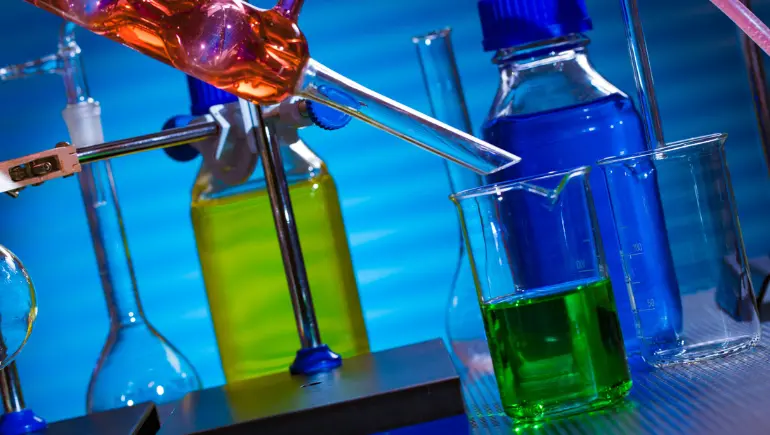
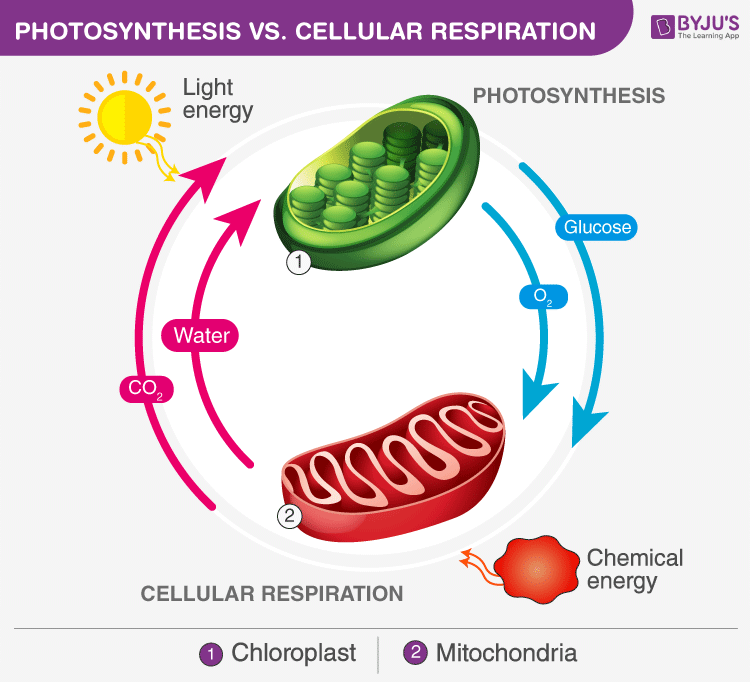

Окисно-відновні реакції
Окисно-відновні реакції — це реакції, які відбуваються зі зміною ступенів окиснення хімічних елементів.
Історія впровадження окисно-відновних реакцій
Окисно-відновні рівняння вперше були впроваджені у хімічний аналіз у середині 19 століття. Цей підхід до опису хімічних реакцій був запропонований французьким хіміком Шарль-Адольфом Вюрцем в 1834 році. Це стало частиною розвитку його роботи в галузі електрохімії.
У сучасному вигляді окисно-відновні рівняння були сформульовані під впливом робіт Вюрца та інших хіміків, таких як Фрідріх Вельгельм Оствальд та Гільберт Ньюланд. Окисно-відновні рівняння є важливим інструментом для розуміння та опису хімічних процесів, особливо в контексті електрохімії та реакцій, пов'язаних із змінами ступенів окиснення атомів.

Використання окисно-відновних реакцій
-
Батареї та Акумулятори: Окисно-відновні реакції відіграють ключову роль у функціонуванні батарей і акумуляторів, де відбувається обмін електронами між анодом і катодом.
-
Корозія: Окисно-відновні реакції відіграють роль у процесах корозії металів, яка є негативним ефектом, особливо в області матеріалознавства та інженерії.
-

Спалювання: Згорання пального, такого як бензин чи дрова, - це також окисно-відновна реакція, де речовина здає електрони (окисник) і речовина приймає їх (паливо).
-
Хімічний аналіз: Окисно-відновні реакції широко використовуються в хімічному аналізі для визначення концентрацій речовин.
-

Хімічний синтез: Окисно-відновні реакції використовуються у хімічному синтезі для створення нових сполук.
-

Біологічні процеси: Окисно-відновні реакції грають ключову роль в біологічних процесах, зокрема в диханні клітин та процесах метаболізму.